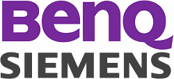
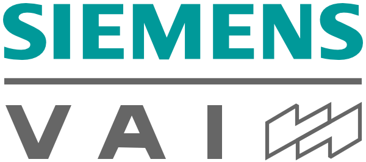
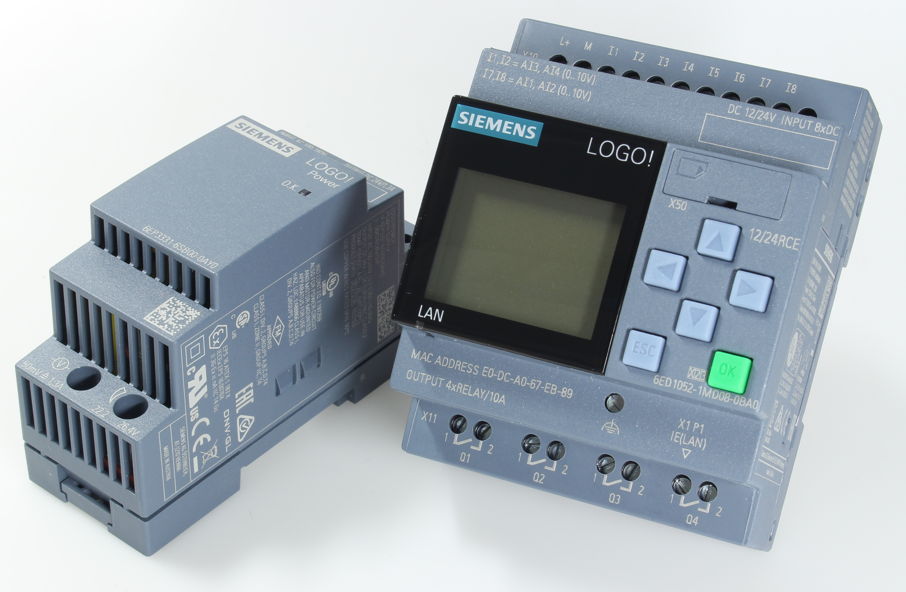

지멘스 SIEMENS
지멘스(Siemens)는 1847년 베를린에서 창립해 산업자동화·전기·철도·의료기술을 아우르는 독일의 다국적 산업·전기 기업이다.
최종 업데이트

지멘스는 어떤 브랜드인가
지멘스(Siemens)는 1847년 베를린에서 베르너 폰 지멘스(Werner von Siemens)가 설립한 독일의 산업·기술 대기업이다. 출발점은 바늘이 글자를 가리키는 방식의 전신기를 만들던 소규모 공방이었으나, 발전기와 전철, 의료기기로 사업을 넓히며 전기·전자 전 영역을 아우르는 콘체른으로 성장했다.
오늘날 본사를 뮌헨에 두고 전 세계 약 31만 명을 고용한 산업 자동화·디지털화 분야의 핵심 기업이며, 연 매출은 약 759억 유로 규모다. 한 세기 반 넘게 전기 인프라의 역사와 함께해 온 회사로 평가된다.
지멘스는 어떻게 봐야 할까
지멘스를 이해하는 핵심은 종합 전기 기업에서 산업용 소프트웨어 중심으로의 무게 이동이다. 미국 GE, 프랑스 슈나이더 일렉트릭, 스위스 ABB가 자동화·전력 그리드에서 겹치는 경쟁자이지만, 지멘스는 공장·설비를 가상으로 구현하는 디지털 트윈과 엑셀러레이터(Xcelerator) 플랫폼을 묶어 하드웨어와 소프트웨어를 한 흐름으로 파는 점을 차별점으로 내세운다.
2020년 에너지 사업을 지멘스 에너지로 분사하고, 헬시니어스(Healthineers)와 모빌리티를 별도 상장사로 떼어낸 포트폴리오 재편은 디지털 인더스트리·스마트 인프라·모빌리티 세 축에 집중하겠다는 신호다. 2025년 약 100억 달러 규모의 알테어 인수도 같은 맥락이다.
한국에서는 제조 현장 자동화와 철도, 의료영상 장비를 통해 산업계와 병원에 폭넓게 연결되어 있어, 국내 스마트팩토리 전환을 논할 때 빠지지 않는 이름이다.
지멘스는 어떻게 시작되고 성장했나
시작은 1847년 10월, 베르너 폰 지멘스와 기술자 요한 게오르크 할스케(Johann Georg Halske)가 베를린에 세운 전신 제작소 '지멘스 운트 할스케(Siemens & Halske)'였다. 사촌 요한 게오르크 지멘스도 출자에 참여한 열 명 남짓의 회사였다.
이듬해 회사는 베를린에서 프랑크푸르트를 잇는 유럽 최초의 장거리 전신선 수주에 성공했고, 1853년에는 러시아 정부로부터 약 구천 킬로미터에 이르는 국가 전신망 건설을 맡으며 동생 카를이 상트페테르부르크 거점을 이끌었다. 1866년 베르너 폰 지멘스는 다이너모(발전기)의 원리를 발견해 대규모 전기 발전의 길을 열었고, 1879년에는 외부 전원으로 달리는 세계 첫 전기 철도를 선보였다.
이후 의료기기와 전력 설비로 영역을 넓히며 통신·전기·산업을 아우르는 글로벌 콘체른으로 자리 잡았다.
지멘스의 브랜드 아이덴티티는 무엇인가
지멘스의 정체성은 신뢰성과 공학적 정밀함, 장기적 안목에 뿌리를 둔다. 로고는 군더더기 없는 산세리프 워드마크 하나로 회사명을 그대로 보여 주며, 1991년 이후 청록 계열의 '피트롤(petrol)' 색을 브랜드 기준색으로 일관되게 써 왔다.
이 차분한 청록은 안전감과 안정감을 전하려는 의도로 선택되었고, 모든 제품과 커뮤니케이션에 통일되게 적용된다. 주 고객은 제조사·전력회사·철도운영사·병원 같은 기업과 기관이며, 브랜드 보이스는 과장된 수사를 피하고 기술적 사실과 성과를 담담하게 전하는 전문가 어조를 유지한다.
화려함보다 항구적 안정과 책임감을 앞세우는 인상이 일관된다.
지멘스의 대표 제품과 서비스는 무엇인가
제품군은 크게 다섯 축이다. 공장 자동화 제어기기와 산업용 소프트웨어를 다루는 디지털 인더스트리, 빌딩·전력 배전 기술의 스마트 인프라, 철도 차량과 신호·운영 서비스를 맡는 모빌리티, 그리고 진단 영상·검사 장비를 공급하는 헬시니어스가 중심이다.
여기에 산업 자동화 컨트롤러와 디지털 트윈, 시뮬레이션을 묶은 엑셀러레이터 플랫폼이 더해진다. 판매는 일반 소비자가 아닌 기업·기관 대상 직접 영업과 파트너 채널을 통해 이뤄진다.
지멘스는 누가 만들고 이끌었나
창업자: 베르너 폰 지멘스와 요한 게오르크 할스케(Werner von Siemens & Johann Georg Halske)가 1847년 설립했다. 소유: 독립 상장사(지멘스 AG, 프랑크푸르트 증권거래소).
지멘스는 지금 어떤 상태인가
본사는 독일 뮌헨에 있다. 그룹 회장 겸 최고경영자는 롤란트 부슈(Roland Busch)다.
2024 회계연도(2024년 9월 말 기준) 직원 수는 약 31만 2천 명, 매출은 약 759억 유로, 순이익은 약 90억 유로를 기록했다. 그 밖의 세부 지표는 미공개.
지멘스 연혁 — 주요 사건은 언제였나
지멘스 로고는 어떻게 변해왔나
대표 로고대표 브랜드 마크
BI/CI 아카이브 3보관 이미지 3
BI/CI 아카이브 5보관 이미지 5
BI/CI 아카이브 6보관 이미지 6자주 묻는 질문
지멘스는 어느 나라 브랜드인가요?
지멘스는 독일의 기술·전자 브랜드입니다.
지멘스는 언제 설립되었나요?
지멘스는 1847년 설립되었습니다.
지멘스의 브랜드 아이덴티티는 무엇인가요?
지멘스의 정체성은 신뢰성과 공학적 정밀함, 장기적 안목에 뿌리를 둔다.
지멘스의 본사는 어디에 있나요?
본사는 독일 뮌헨에 있다.
지멘스의 창업자는 누구인가요?
지멘스의 창업자는 에른스트 베르너 폰 지멘스입니다(위키데이터 기준).
지멘스의 공식 웹사이트는 어디인가요?
지멘스의 공식 웹사이트는 https://www.siemens.com/ 입니다.
출처와 검증
지멘스 관련 참고: 공식 웹사이트 · 위키데이터 Q81230 · 한국어 위키백과 · 영어 위키백과. 브랜드명은 한글과 원어를 함께 표기하되 데이터에 없는 표기는 만들지 않습니다. 기원 국가·설립연도는 검수된 정의문에서 확인된 값을 우선하고, 없을 때만 공식 웹사이트 URL이 일치하는 위키데이터 개체의 값을 씁니다. 위키데이터 값은 2026-09-07 기준입니다.